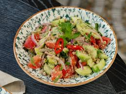

Salad

Description
Salad is a dish consisting of mixed pieces of food, typically featuring vegetables or fruits. It can be served cold or warm and is often dressed with oil, vinegar, or other dressings.
Ingredients
- Mixed greens (lettuce, spinach, arugula)
- Cherry tomatoes
- Cucumber
- Red onion
- Bell peppers
- Olives
- Feta cheese (optional)
- Dressing (olive oil, vinegar, lemon juice)
Steps
- Wash and dry the mixed greens.
- Chop the vegetables into bite-sized pieces.
- Toss the greens and vegetables together in a large bowl.
- Add olives and feta cheese if desired.
- Drizzle with dressing and toss to combine.
- Serve immediately.
Home